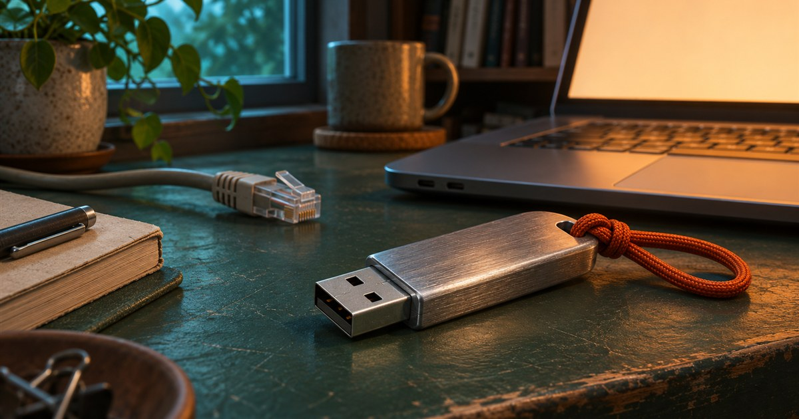
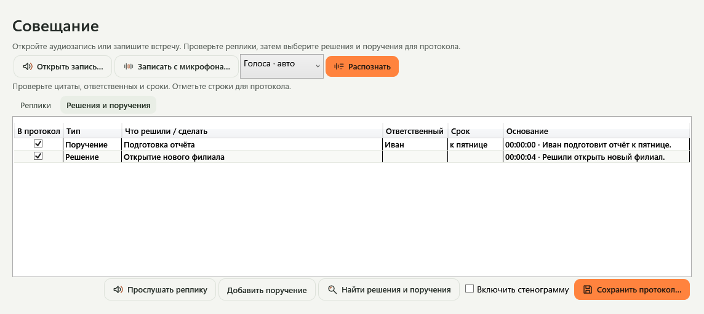

ИИ судного дня
Почему у каждого должна быть флешка с ИИ, что положить на неё заранее и какие задачи OSTUM Desktop выполнит на Windows без интернета.
Представьте, что до встречи сорок минут. На ноутбуке лежат договор на сорок семь страниц, прошлогодний прайс и голосовое сообщение от коллеги. Вы помните, что срок поставки изменился. Где это написано? За окном электричка проезжает последний участок со связью.
Вот зачем, по-моему, у каждого должна быть флешка с ИИ. Конец света для этого слишком большое событие. Достаточно одной поездки или одного договора, который вообще нельзя загружать в облако. OSTUM Desktop появился именно вокруг этой идеи. У него есть локальная модель, русскоязычный чат и установочный комплект, который можно подготовить заранее.

Что будет отвечать, когда погаснет Wi-Fi
В OSTUM 5.7.0 рекомендуемая модель называется Zarum 9B. В её основе открытые веса Qwen3.5-9B. Движок llama.cpp выполняет вычисления на процессоре или с ускорением совместимой видеокарты. Для базового чата не нужен аккаунт. Можно написать «Найди в приложенном договоре срок поставки и приведи абзац целиком», открыть указанный фрагмент и прочитать, что подписывали стороны.
Помощник читает PDF, Word, обычный текст и табличные данные. Для сканов есть локальное распознавание текста Windows. К чату можно приложить фото или разовый снимок выбранного экрана. Для работы с папками вы сами выбираете каталог и разрешения. Из чата можно найти файл, открыть калькулятор, посмотреть список окон или свернуть выбранное окно. Историю бесед можно искать по словам, архивировать и удалять.

Что поручить агентам
На простую просьбу отвечает сама Zarum. Для задачи вроде «Найди в этих условиях противоречия и покажи выдержки» можно включить командную работу. Аналитик и проверяющий разбирают задачу параллельно, рецензент сверяет выводы, редактор собирает ответ. В чате загораются маленькие огоньки с названиями ролей. Эти роли использует одна установленная модель. Цифры из важных документов всё равно стоит сверять по указанным ячейкам или абзацам.
Что делать с голосом, картинками и музыкой
Выберите свой микрофон и продиктуйте вопрос. При установленном голосовом модуле Whisper распознаёт речь на ПК, а ответ можно прослушать. Для совещаний есть отдельное окно. Загрузите запись, получите расшифровку с таймкодами, нажмите «Найти решения и поручения». У каждого предложения можно прослушать исходную фразу, исправить имя, отметить подтверждённые строки и сохранить протокол. На одной звуковой дорожке программа определяет говорящих приблизительно. Пример протокола

Для рисунков предусмотрен локальный Z-Image-Turbo. Для музыки есть дополнительный ACE-Step. Можно попросить двенадцать секунд спокойной электроники для заставки, прослушать результат и сохранить WAV. Поддерживаются инструментальные отрывки от 10 до 60 секунд. Заранее добавьте нужные модули в комплект.
Два прайса лучше показывают возможности, чем список обещаний
В учебной паре Excel артикул A17 подорожал с 90 до 100 ₽. Два других товара поменяли местами, одну позицию удалили и одну добавили. OSTUM Pro сопоставил строки по артикулу и нашёл ровно три расхождения. Цену A17 можно проверить самостоятельно в ячейке B2 обеих книг. Команда «Сверь две таблицы Excel» открывает выбор файлов, ключевого столбца и предпросмотр. Отчёт сохраняется отдельной книгой. Скачать обе таблицы и повторить опыт

Редакторы Word и Excel открываются справа от чата. Можно предложить правку в абзаце, изменить ячейку, выбрать изменения для сохранения и вернуть предыдущую версию. Есть сравнение редакций договора, сбор предложений поставщиков, проверка счетов, поручения с привязкой к источнику и экспорт в календарь. Повторяющуюся сверку можно сохранить как сценарий и в следующий раз подставить новые файлы.
Чему помощника можно научить
Проекту можно задать рабочий профиль. Для обучения в Pro человек отбирает от 5 до 200 проверенных пар «вопрос — ответ» минимум из трёх независимых групп. На самом ПК обучается небольшой адаптер LoRA выходного слоя Zarum. Программа сравнивает его с базовой версией на отложенных примерах и показывает случаи ухудшения. Пользователь решает, включать ли адаптер для этого проекта. Другую совместимую модель GGUF можно подключить с диска или выбрать в каталоге. Для анализа фото понадобится подходящий зрительный проектор.
Компании могут задать разрешённые папки и запретить внешние обращения политикой рабочей станции. В обычном режиме веб-поиск включается отдельно и отправляет запрос в сеть. Сеть также нужна для получения новых моделей и обновлений. Для изолированного ПК обновление можно принести на носителе. Встроенная справка открывается по F1 без подключения. Руководство для администратора
Как собрать флешку, которая пригодится
- На компьютере с интернетом скачайте выпуск для Windows 10 или 11 x64. Установщик 5.7.0 весит 108,3 МиБ. При первой полной установке он загрузит шесть файлов моделей объёмом 13,38 ГБ. Для музыки дополнительно нужно 2,71 ГБ. Установщик выпущен без подписи издателя. В релизе опубликован SHA-256. Установщик и контрольная сумма
- Подготовьте полный комплект. В инструкции проекта есть команды, которые соберут папку
Ostum-Offlineиз готовой библиотеки. Комплект с диктовкой, рисованием, музыкой и CUDA занимает около 17,6 ГБ. Подойдёт, например, флешка на 32 ГБ с exFAT или NTFS. Скопируйте всю папку вместе сModels,AccelerationиOSTUM-OFFLINE.txt. Инструкция для флешки - Проведите репетицию. На целевой машине ориентируйтесь на 16 ГБ ОЗУ и минимум 20 ГБ свободного места на SSD. Отключите сеть, запустите EXE с подготовленной флешки, дождитесь первого ответа и приложите знакомое фото. Для голосового модуля запишите одну фразу. Если нужен Pro, отсканируйте QR-код телефоном с интернетом. После однократной проверки подписки на канал разработчика перенесите подписанный файл активации на ПК. Доступ бессрочный для этой установки и пользователя Windows.
Скорость зависит от железа. На ноутбуке с Ryzen 7 7435HS, 16 ГБ ОЗУ и RTX 4050 Laptop с 6 ГБ видеопамяти короткий тест дал 13,1 токена в секунду с CUDA. Загрузка модели заняла 11 секунд. В настройках есть тот же замер для вашего компьютера. Условия измерений
Перед тем как убрать флешку в ящик, я бы положил рядом с установщиком инструкцию от одного домашнего прибора. Отключите Wi-Fi и спросите, как заменить фильтр и на какой странице это написано. Если подсказка совпала с вашей инструкцией, вы уже знаете, зачем храните этот носитель.
Материал проекта OSTUM Desktop. Текст и обложка подготовлены с помощью ИИ. Сведения сверены по выпуску 5.7.0, а пример с прайсами — по результату модуля сверки. Исходный код OSTUM